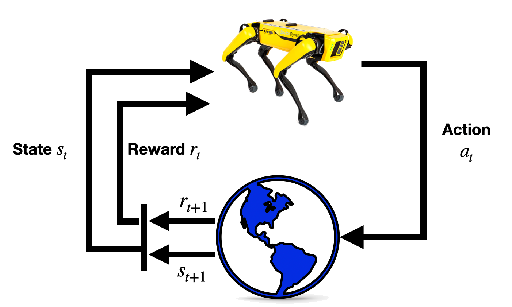

Học tăng cường¶
Pratik Chaudhari (University of Pennsylvania and Amazon), Rasool Fakoor (Amazon), và Kavosh Asadi (Amazon)
Học tăng cường (Reinforcement Learning, RL) là một tập hợp các kỹ thuật cho phép chúng ta xây dựng các hệ thống học máy ra quyết định tuần tự. Ví dụ, một gói hàng chứa quần áo mới mà bạn mua từ một nhà bán lẻ trực tuyến đến trước cửa nhà bạn sau một chuỗi các quyết định, chẳng hạn nhà bán lẻ tìm quần áo trong kho gần nhà bạn nhất, đặt quần áo vào hộp, vận chuyển hộp bằng đường bộ hoặc đường hàng không, và giao nó đến nhà bạn trong thành phố. Có nhiều biến ảnh hưởng đến việc giao gói hàng trên đường đi, chẳng hạn quần áo có sẵn trong kho hay không, mất bao lâu để vận chuyển hộp, liệu nó có đến thành phố của bạn trước khi xe giao hàng hằng ngày rời đi hay không, v.v. Ý tưởng then chốt là ở mỗi giai đoạn, các biến mà chúng ta thường không kiểm soát này ảnh hưởng đến toàn bộ chuỗi sự kiện trong tương lai; chẳng hạn nếu có chậm trễ khi đóng gói hộp trong kho, nhà bán lẻ có thể cần gửi gói hàng bằng đường hàng không thay vì đường bộ để đảm bảo giao đúng hạn. Các phương pháp học tăng cường cho phép chúng ta thực hiện hành động phù hợp ở mỗi giai đoạn của một bài toán ra quyết định tuần tự nhằm cuối cùng tối đa hóa một độ hữu dụng nào đó, ví dụ như giao gói hàng đến bạn đúng hạn.
Những bài toán ra quyết định tuần tự như vậy xuất hiện ở nhiều nơi khác, chẳng hạn khi chơi Go, nước đi hiện tại của bạn quyết định các nước đi tiếp theo và các nước đi của đối thủ là các biến bạn không thể kiểm soát... một chuỗi nước đi cuối cùng quyết định bạn có thắng hay không; các bộ phim mà Netflix đề xuất cho bạn hiện tại quyết định bạn xem gì, việc bạn có thích bộ phim hay không là điều Netflix chưa biết, và cuối cùng một chuỗi đề xuất phim quyết định mức độ hài lòng của bạn với Netflix. Học tăng cường hiện đang được dùng để phát triển các lời giải hiệu quả cho những bài toán này [mnih2013playing, Silver.Huang.Maddison.ea.2016]. Khác biệt then chốt giữa học tăng cường và học sâu tiêu chuẩn là trong học sâu tiêu chuẩn, dự đoán của một mô hình đã huấn luyện trên một mẫu kiểm tra không ảnh hưởng đến dự đoán trên một mẫu kiểm tra trong tương lai; trong học tăng cường, các quyết định ở những thời điểm tương lai (trong RL, quyết định còn được gọi là hành động) bị ảnh hưởng bởi những quyết định đã được đưa ra trong quá khứ.
Trong chương này, chúng ta sẽ phát triển các nền tảng của học tăng cường và có trải nghiệm thực hành khi triển khai một số phương pháp học tăng cường phổ biến. Trước tiên, chúng ta sẽ phát triển một khái niệm gọi là Markov Decision Process (MDP), cho phép chúng ta suy nghĩ về các bài toán ra quyết định tuần tự như vậy. Một thuật toán gọi là Value Iteration sẽ là cái nhìn đầu tiên của chúng ta về cách giải các bài toán học tăng cường dưới giả định rằng chúng ta biết các biến không kiểm soát được trong một MDP (trong RL, các biến không kiểm soát được này được gọi là môi trường) thường hành xử như thế nào. Sử dụng phiên bản tổng quát hơn của Value Iteration, một thuật toán gọi là Q-Learning, chúng ta sẽ có thể thực hiện các hành động phù hợp ngay cả khi không nhất thiết có đầy đủ hiểu biết về môi trường. Sau đó, chúng ta sẽ nghiên cứu cách dùng mạng sâu cho các bài toán học tăng cường bằng cách bắt chước hành động của một chuyên gia. Và cuối cùng, chúng ta sẽ phát triển một phương pháp học tăng cường dùng mạng sâu để thực hiện hành động trong các môi trường chưa biết. Những kỹ thuật này tạo thành nền tảng của các thuật toán RL nâng cao hơn hiện được dùng trong nhiều ứng dụng thực tế, một số trong đó chúng ta sẽ chỉ ra trong chương.
